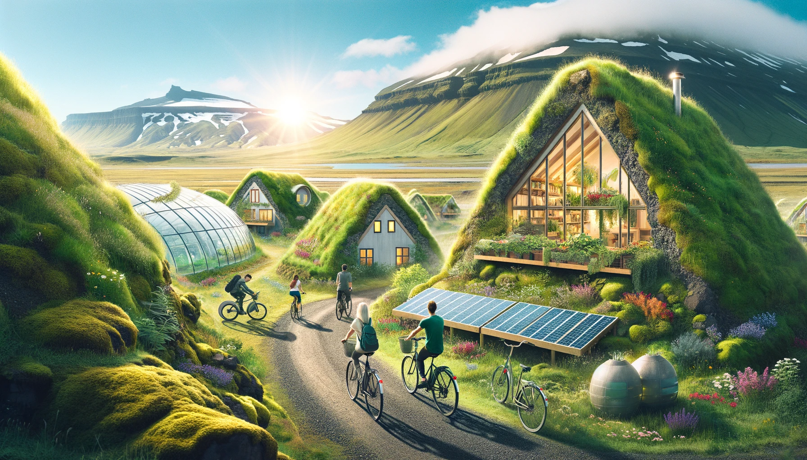

Leader of Sustainable Development — an Icelandic Perspective
How did a nation of 390,000 become a sustainability pioneer? An educational resource on the Icelandic model — and the lessons other small communities can borrow.

About the resource
The Icelandic word for sustainability, sjálfbærni, closely mirrors the word for independence, sjálfstæði — self-sufficiency and resilience, side by side. That idea runs through this resource.
It explores how Iceland has emerged as a global leader in sustainable development, through pioneering renewable energy and environmental policy. The story has two complementary sides: local governments that create the policy frameworks and infrastructure, and small enterprises that drive practical, on-the-ground innovation — a model that other small nations and communities can learn from.
Iceland by the numbers
- 100% of electricity from renewables (≈73% hydropower, 27% geothermal); around 85% of total primary energy renewable
- A national goal of carbon neutrality by 2040 — a decade ahead of many nations
- 72 municipalities piloting local climate action — from Reykjavík to Akureyri, Vestmannaeyjar and Höfn
- Reykjavík's cycling network: 45+ km of paths and ~12,000 tonnes of CO₂ avoided each year
- Pioneering carbon capture (CarbFix) and geothermal innovation in food, wellness and industry
Gallery
